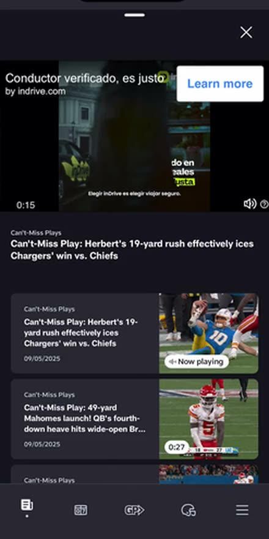
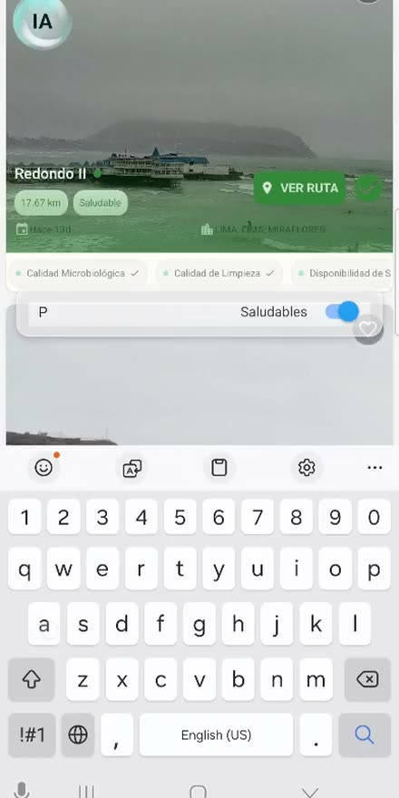
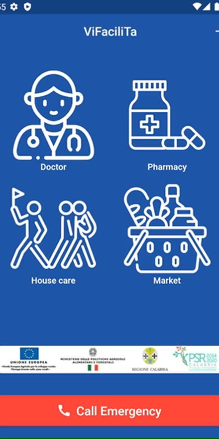
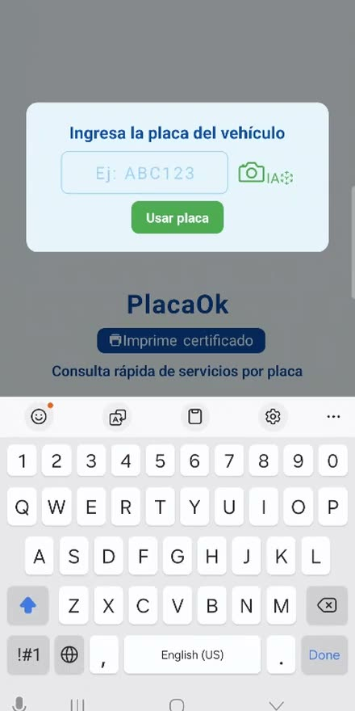

Open to Senior and Staff roles · Canada, USA, Europe
Binni Cordova
Senior Software Engineer and Mobile Architect. Eight years building the thing in your hand, and everything underneath it.
Real products, not case studies.
What is running on this screen shipped. Banking used by a hundred thousand people. Streaming watched by millions. A commerce app past a million downloads.
Every screen is the top of a stack.
Keep going.
I build all of it.
Interface down to the Lambda, and the agents that now help work the tickets. Reviewed and signed off by the engineer accountable for them.
The record
- 1M+
- downloads, Platanitos commerce app
- 100,000+
- users on Itaú mobile banking
- 3,000+
- hospitals and clinics running Gruppo GPI systems
- Millions
- of viewers on NFL+ across mobile, web and CTV
- 90%+
- automated test coverage held on a transaction-critical codebase
Twelve products. Five industries. Four languages.
Fintech, banking, media, healthcare, commerce. Peru, Chile, Italy, Germany, the United States. English, Spanish, Italian, German.
Let's build the next one.
Currently Senior Full Stack Software Engineer at The Coca-Cola Company. Open to visa sponsorship and employer relocation.
Email Binni